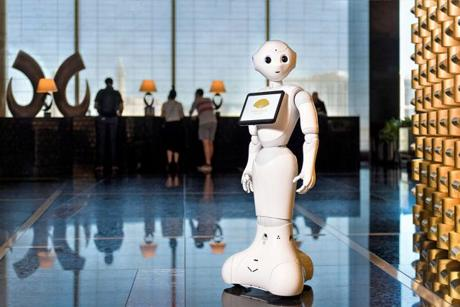
Pepper
Aldebaran (SoftBank)Humanoid concierge: greets guests, answers questions, gives directions. Production stopped; the installed fleet still works.

Humanoid concierge: greets guests, answers questions, gives directions. Production stopped; the installed fleet still works.
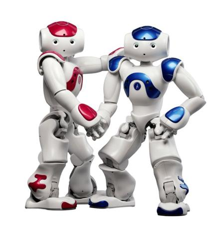
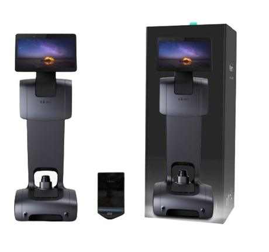
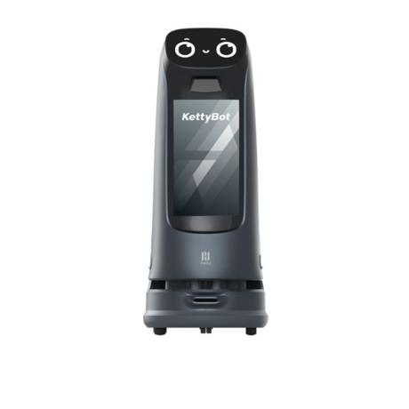
Greets at the entrance, leads guests to the table, shows ads on its screen.
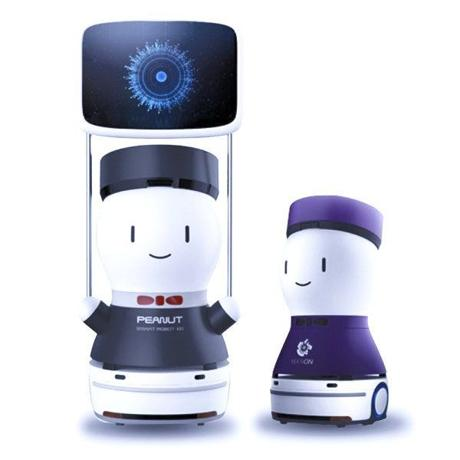
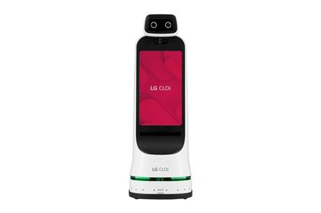
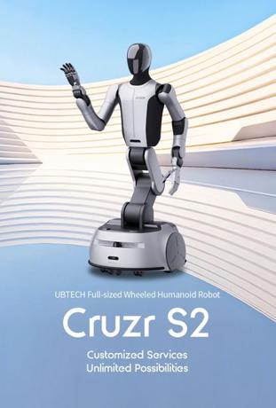
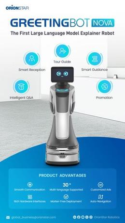
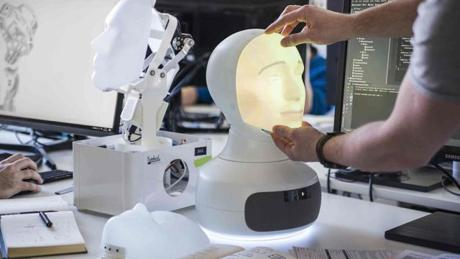
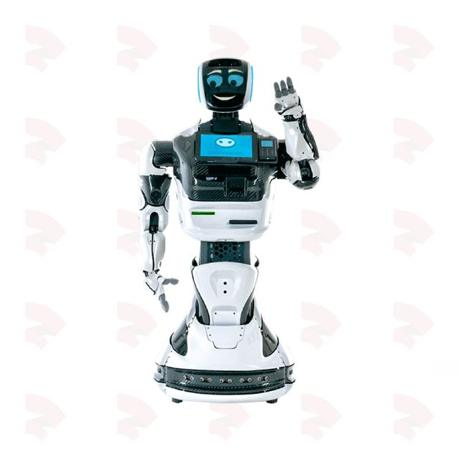
Promoter and consultant robot: answers questions, scans documents, prints passes.
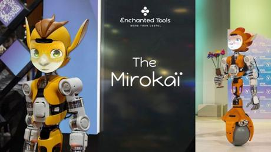
Character robot on a rolling ball: carries items, talks to guests. Pilot stage.
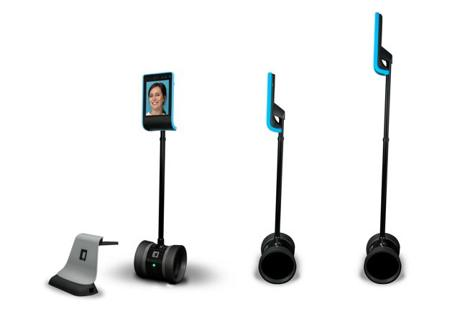
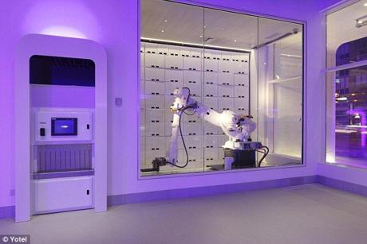
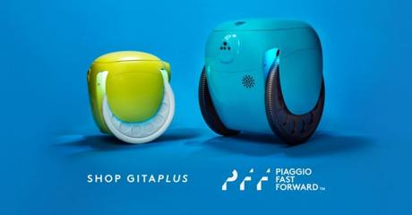
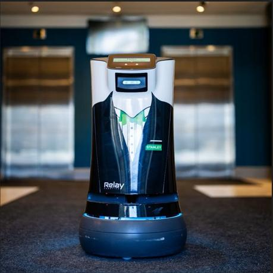
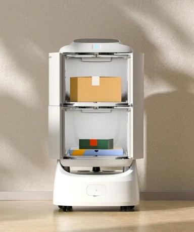
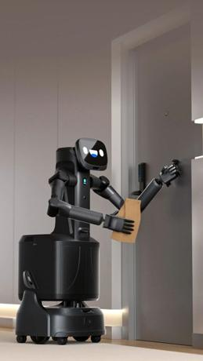
Delivery robot with two arms: presses lift buttons, hands over items. Announced 2025.
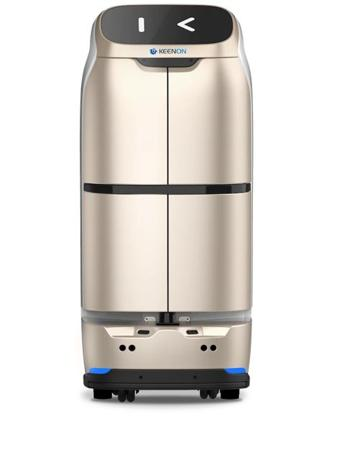
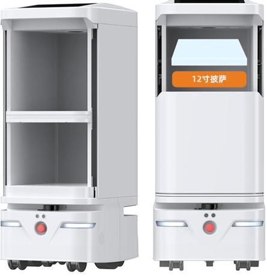
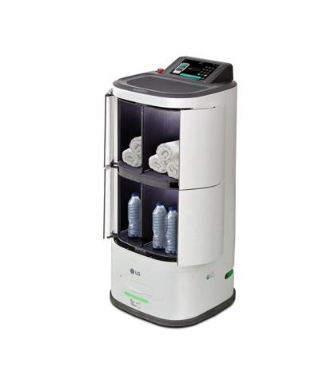
Courier with doors and 4 compartments for hotels and hospitals.
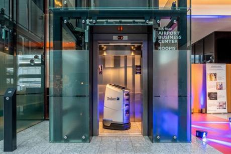
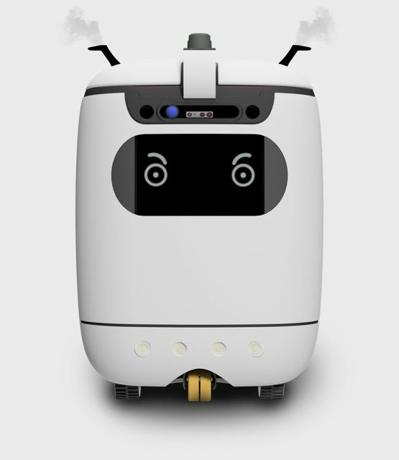
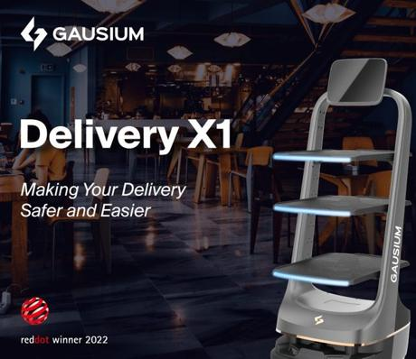
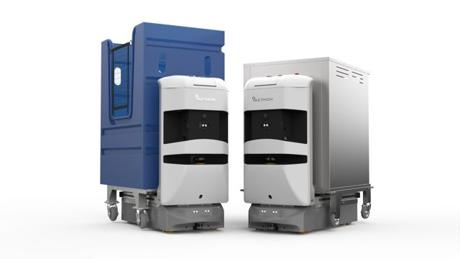
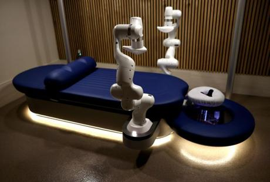
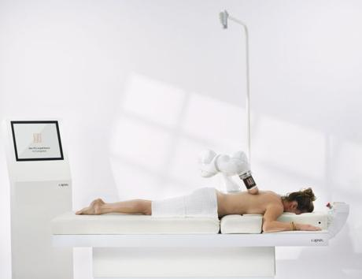
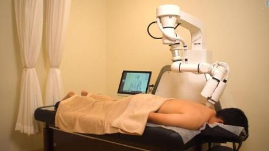
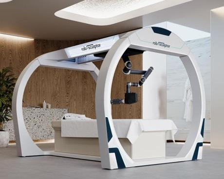
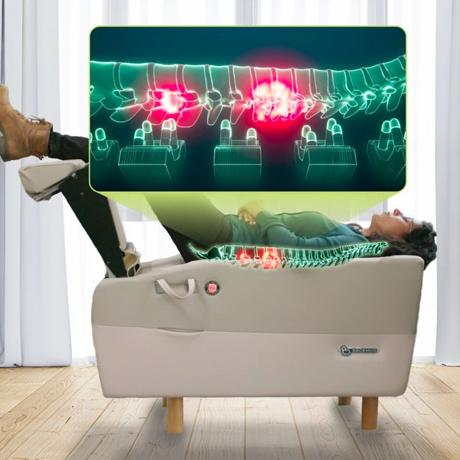
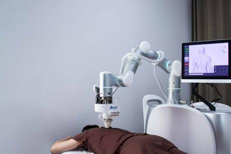
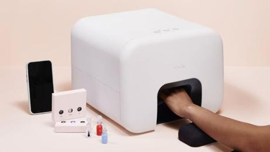
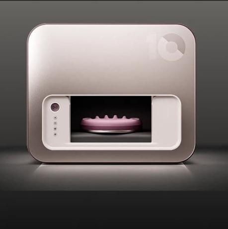
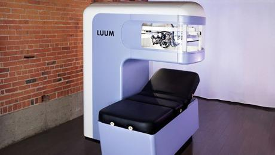
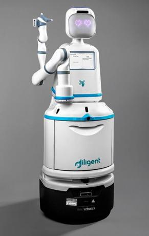
Clinic assistant with an arm: carries samples, drugs and supplies between rooms.
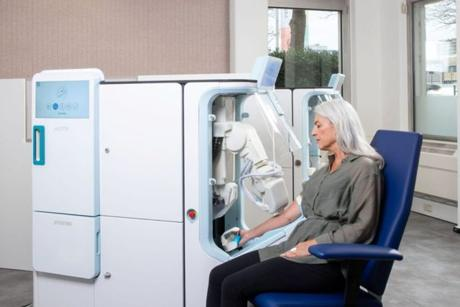
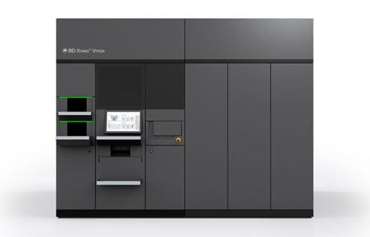
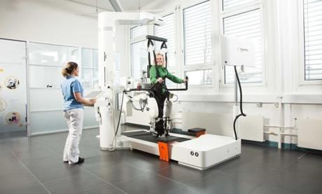
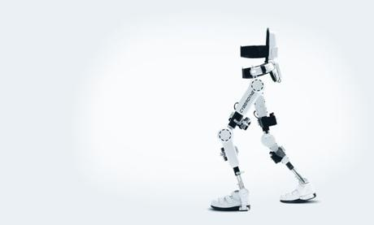
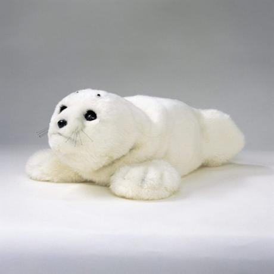
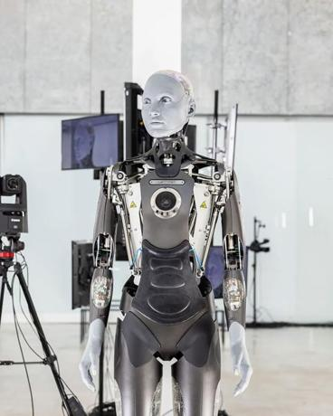
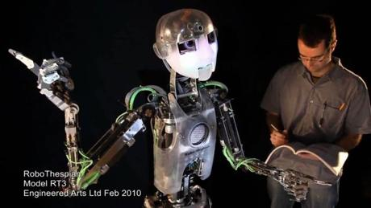
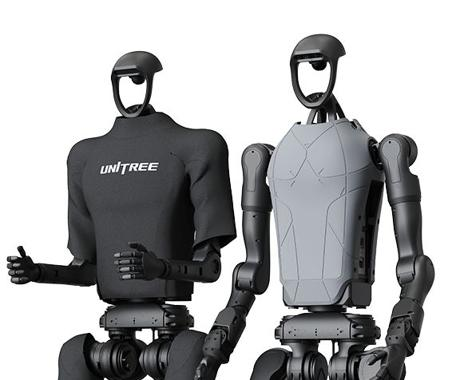
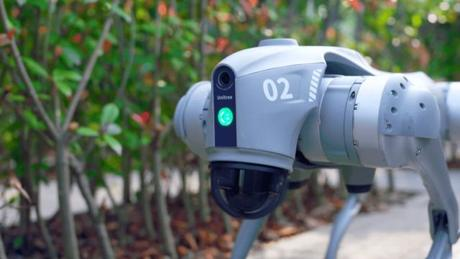
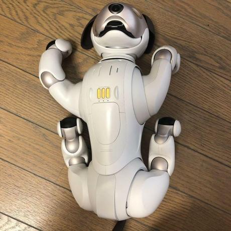
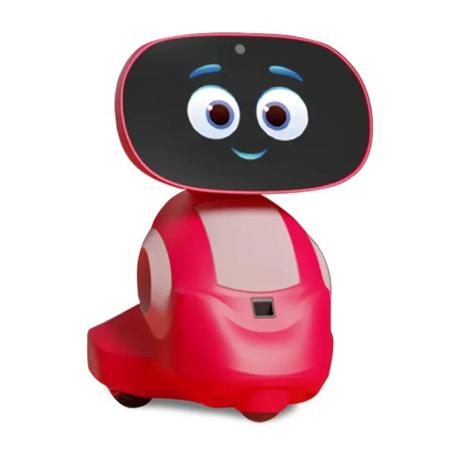
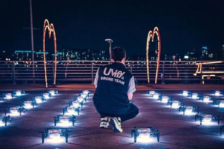
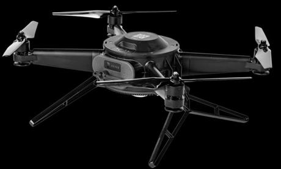
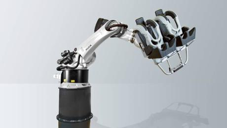
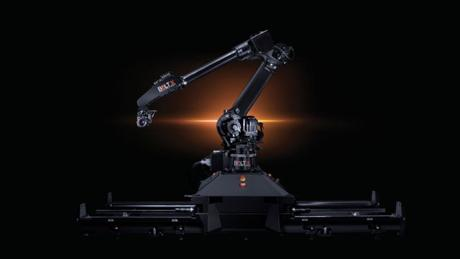
High-speed camera robot arm for event and red-carpet video.
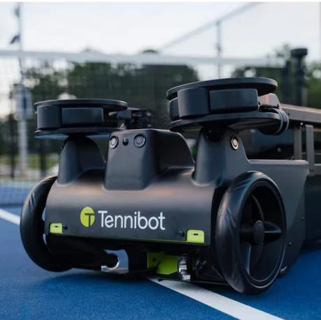
Japanese system: a robot sorts and loads dishes into the machine.
Automated laser that keeps gulls and pigeons away from terraces and roofs.
Robot that collects sargassum offshore before it reaches the beach. Pilot stage.
Purpose-built robotaxi with no steering wheel; runs on the Las Vegas Strip.